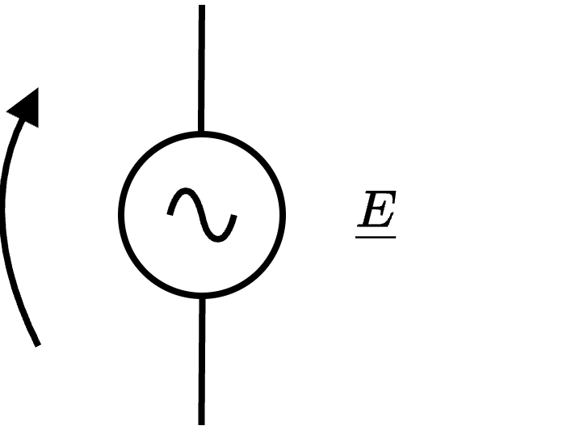
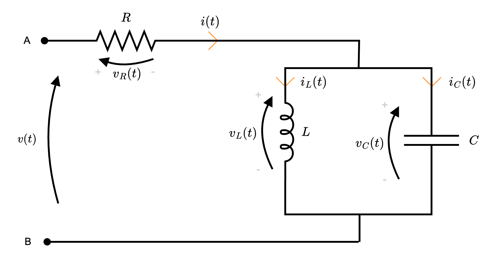

Definizione - Metodo di risoluzione simbolico
Considerando una rete in regime sinusoidale, si ha che il metodo di risoluzione simbolico consiste nell'applicare la trasformata di Steinmetz sulle equazioni differenziali al fine di ottenere equazioni algebriche più semplici da risolvere.
Definizione - Legge di Kirchhoff per le tensioni in forma simbolica (LKT)
Considerando una maglia in una rete a regime sinusoidale, la sommatoria dei fasori delle tensioni di tutti i componenti è nulla, ovvero \[ \sum_{i = 1}^{\# \ \text{componenti}} \underline{V}_i(t) = 0 \qquad \forall t \]
Definizione - Legge di Kirchhoff per le tensioni in forma simbolica (LKT)
Considerando una maglia in una rete a regime sinusoidale, la sommatoria dei fasori delle tensioni di tutti i componenti è nulla, ovvero \[ \sum_{i = 1}^{\# \ \text{componenti}} \underline{V}_i(t) = 0 \qquad \forall t \]
Definizione - Legge di Kirchhoff per le correnti in forma simbolica(LKC)
Considerando una superficie chiusa (ad esempio i nodi) in una rete a regime sinusoidale, la sommatoria dei fasori delle correnti entranti è uguale alla sommatoria dei fasori delle correnti uscenti, ovvero \[ \sum_{j = 1}^{\# \ \text{entranti}} \underline{I}_j(t) = \sum_{k = 1}^{\# \ \text{uscenti}} \underline{I}_k(t) \qquad \forall t \] o, in maniera equivalente \[ \sum_{j = 1}^{\# \ \text{correnti}} \pm \underline{I}_j(t) = 0 \qquad \forall t \]
Definizione - Generatore ideale di tensione sinusoidale
Il generatore ideale di tensione sinusoidale, il cui simbolo è il seguente è un bipolo che permette di "imporre" una tensione pari a \[ v(t) = \sqrt{2} \cdot E \cdot \cos(\omega \cdot t + \alpha) \] e, applicando la trasformata di Steinmetz si ottiene il seguente fasore associato \[ \begin{array}{ccl} S[v(t)] & = & \sqrt{2} \cdot E \cdot \cos(\omega \cdot t + \alpha) \\ & = & \underline{E} \end{array} \]

Definizione - Generatore ideale di corrente sinusoidale
Il generatore ideale di corrente sinusoidale è un bipolo che permette di "imporre" una corrente pari a \[ i(t) = \sqrt{2} \cdot I \cdot \cos(\omega \cdot t + \alpha) \] e, applicando la trasformata di Steinmetz si ottiene il seguente fasore associato \[ \begin{array}{ccl} S[i(t)] & = & \sqrt{2} \cdot I \cdot \cos(\omega \cdot t + \alpha) \\ & = & \underline{I} \end{array} \]
Definizione - Impedenza e ammettenza
L'impedenza \( \underline{Z}\) è una grandezza fisica (misurata in Ohm \( \mathrm{ \, \Omega }\)) associata a componenti in reti a regime sinusoidale e rappresentabile da un fasore (ndr, è quindi un numero complesso dipendente dalla frequenza).
Considerando la 1° legge di Ohm simbolica, ovvero \[ \underline{V} = \underline{Z} \cdot \underline{I} \] si ha che essa è definita come \[ \underline{Z} = \frac{\underline{V}}{\underline{I}} \] La fase di tale fasore indica lo sfasamento \( \varphi\) tra tensione e corrente:
Considerando la 1° legge di Ohm simbolica, ovvero \[ \underline{V} = \underline{Z} \cdot \underline{I} \] si ha che essa è definita come \[ \underline{Z} = \frac{\underline{V}}{\underline{I}} \] La fase di tale fasore indica lo sfasamento \( \varphi\) tra tensione e corrente:
- se tale valore è positivo, allora la tensione è in anticipo rispetto alla corrente;
- se tale valore è negativo, allora la tensione è in ritardo rispetto alla corrente.
Ammettenza
È possibile definire l'ammettenza \( \underline{Y}\) come \[ \underline{Y} = \frac{1}{\underline{Z}} \] che è una grandezza misurata in Siemens \( \mathrm{ \, S }\).Nota bene - Ad esempio
Considerando che la tensione simbolica e la corrente simbolica in una rete siano uguali a \[ \left\{ \begin{array}{ccl} \underline{V} & = & V \cdot \mathrm{e}^{\jmath \cdot \alpha} \\ \underline{I} & = & I \cdot \mathrm{e}^{\jmath \cdot \beta} \end{array} \right. \] si ha che è possibile calcolare l'impedenza come \[ \begin{array}{ccl} \underline{Z} & = & \frac{\underline{V}}{\underline{I}} \\ & = & \frac{V \cdot \mathrm{e}^{\jmath \cdot \alpha}}{I \cdot \mathrm{e}^{\jmath \cdot \beta}} \\ & = & \frac{V}{I} \cdot \mathrm{e}^{\jmath \cdot (\alpha - \beta)} \end{array} \]
Definizione - Resistori in regime sinusoidale
Considerando un resistore in un circuito in regime sinusoidale, si ha che applicando la trasformata di Steinmetz all'equazione costitutiva di questo componente si ottiene \[ \begin{array}{ccl} v(t) = R \cdot i(t) & \xrightarrow{S[]} & S[v(t)] = S[R \cdot i(t)] \\ & \to & \underline{V} = R \cdot \underline{I} \end{array} \] Calcolando ora l'impedenza di tale componente, si ha che \[ \begin{array}{ccl} \underline{Z} & = & \frac{\underline{V}}{\underline{I}} \\ & = & R \end{array} \] ovvero, l'impedenza è un numero complesso (puramente reale) uguale a \[ \left\{ \begin{array}{ccl} Z_R & = & R \\ Z_I & = & 0 \end{array} \right. \quad \text{e} \quad \left\{ \begin{array}{ccl} \left| \underline{Z} \right| & = & R \\ \varphi & = & 0 \end{array} \right. \] È ora possibile graficare tale relazione (ipotizzando \( \alpha_V = 0\)) nel dominio fasoriale come
e nel dominio temporale come
Definizione - Induttori in regime sinusoidale
Considerando un induttore in un circuito in regime sinusoidale, si ha che applicando la trasformata di Steinmetz all'equazione costitutiva di questo componente si ottiene \[ \begin{array}{ccl} v(t) = L \cdot \frac{d}{d t} i(t) & \xrightarrow{S[]} & S[v(t)] = S\left[L \cdot \frac{d}{d t} i(t)\right] \\ & \to & \underline{V} = L \cdot S\left[\frac{d}{d t} i(t)\right] \\ & \to & \underline{V} = L \cdot \jmath \cdot \omega \cdot \underline{I} \end{array} \] Calcolando ora l'impedenza di tale componente, si ha che \[ \begin{array}{ccl} \underline{Z} & = & \frac{\underline{V}}{\underline{I}} \\ & = & \jmath \cdot \omega \cdot L \end{array} \] ovvero, l'impedenza è un numero complesso (puramente immaginario) uguale a \[ \left\{ \begin{array}{ccl} Z_R & = & 0 \\ Z_I & = & L \cdot \omega \end{array} \right. \quad \text{e} \quad \left\{ \begin{array}{ccl} \left| \underline{Z} \right| & = & L \cdot \omega \\ \varphi & = & \frac{\pi}{2} \end{array} \right. \] Ipotizzando la fase relativa alla tensione \( \alpha_V = 0\), si ha che è possibile calcolare la fase relativa alla corrente come \[ \begin{array}{ccl} \varphi = \alpha_V - \alpha_I & \to & \alpha_I = \alpha_V - \varphi \\ & \to & \alpha_I = 0 - \frac{\pi}{2} \\ & \to & \alpha_I = -\frac{\pi}{2} \end{array} \] È ora possibile graficare tale relazione nel dominio fasoriale come
e nel dominio temporale come
Definizione - Condensatori in regime sinusoidale
Considerando un condensatore in un circuito in regime sinusoidale, si ha che applicando la trasformata di Steinmetz all'equazione costitutiva di questo componente si ottiene \[ \begin{array}{ccl} i(t) = C \cdot \frac{d}{d t} v(t) & \xrightarrow{S[]} & S[i(t)] = S\left[C \cdot \frac{d}{d t} v(t)\right] \\ & \to & \underline{I} = C \cdot S\left[\frac{d}{d t} v(t)\right] \\ & \to & \underline{I} = C \cdot \jmath \cdot \omega \cdot \underline{V} \end{array} \] Calcolando ora l'impedenza di tale componente, si ha che \[ \begin{array}{ccl} \underline{Z} & = & \frac{\underline{V}}{\underline{I}} \\ & = & \frac{1}{C \cdot \jmath \cdot \omega} \\ & \overset{\cdot \frac{\jmath}{\jmath}}{=} & \frac{1}{C \cdot \jmath \cdot \omega} \cdot \frac{\jmath}{\jmath} \\ & = & \jmath \cdot \left( -\frac{1}{C \cdot \omega} \right) \end{array} \] ovvero, l'impedenza è un numero complesso (puramente immaginario) uguale a \[ \left\{ \begin{array}{ccl} Z_R & = & 0 \\ Z_I & = & -\frac{1}{C \cdot \omega} \end{array} \right. \quad \text{e} \quad \left\{ \begin{array}{ccl} \left| \underline{Z} \right| & = & \frac{1}{C \cdot \omega}\\ \varphi & = & -\frac{\pi}{2} \end{array} \right. \] Ipotizzando la fase relativa alla corrente \( \alpha_V = 0\), si ha che è possibile calcolare la fase relativa alla corrente come \[ \begin{array}{ccl} \varphi = \alpha_V - \alpha_I & \to & \alpha_I = \alpha_V - \varphi \\ & \to & \alpha_I = 0 - \left( -\frac{\pi}{2} \right) \\ & \to & \alpha_I = \frac{\pi}{2} \end{array} \] È ora possibile graficare tale relazione nel dominio fasoriale come
e nel dominio temporale come
Definizione - Reattanza
Considerando il fatto che l'impedenza è un numero complesso composto da una parte reale \( Z_R\) e una parte immaginaria \( Z_I\), ovvero \[ \underline{Z} = Z_R + \jmath \cdot Z_I \] e che una certa impedenza è introdotta dai diversi componenti passivi, ovvero
In particolare:
- nel caso di resistori con resistenza \( R\), è introdotta un'impedenza uguale a \[ \left\{ \begin{array}{ccl} Z_R & = & R \\ Z_I & = & 0 \end{array} \right. \]
- nel caso di induttori con induttanze \( L\), è introdotta un'impedenza uguale a \[ \left\{ \begin{array}{ccl} Z_R & = & 0 \\ Z_I & = & \omega \cdot L \end{array} \right. \]
- nel caso di condensatori di capacità \( C\), è introdotta un'impedenza uguale a \[ \left\{ \begin{array}{ccl} Z_R & = & 0 \\ Z_I & = & -\frac{1}{\omega \cdot C} \end{array} \right. \]
In particolare:
- nel caso di circuiti RL, si ha una reattanza induttiva \( X_L\) dove \[ X_L = \omega \cdot L \]
- nel caso di circuiti RC, si ha una reattanza capacitiva \( X_C\) dove \[ X_C = -\frac{1}{\omega \cdot C} \]
Dimostrazione - Impedenze in serie e impedenza equivalente
Data la proposizione
Enunciato:
Date \( n\) impedenze poste in serie (ovvero che condividono la stessa corrente)
si ha che è possibile sostituirle con un'unica impedenza, il cui valore è uguale a \[ \underline{Z}_{eq} = \sum_{j = 1}^{n} \underline{Z}_j \]
Dimostrazione:
Per dimostrare questa proposizione consideriamo il caso di 3 impedenze in serie (poi facilmente generalizzabile).
Ipotizziamo che tali impedenze appartengano ad una "maglia chiusa"
Ipotizziamo che tali impedenze appartengano ad una "maglia chiusa"
è quindi possibile applicare LKT, da cui si ottiene \[ \underline{V} - \underline{V}_1 - \underline{V}_2 - \underline{V}_3 = 0 \] da cui \[ \begin{array}{ccl} \underline{V} & = & \underline{V}_1 - \underline{V}_2 - \underline{V}_3 \\ & \overbrace{=}^{\text{eq. cost.}} & \underline{Z}_1 \cdot \underline{I}_1 + \underline{Z}_2 \cdot \underline{I}_2 + \underline{Z}_3 \cdot \underline{I}_3 \\ & \overbrace{=}^{\underline{I}_1 = \underline{I}_2 = \underline{I}_3 = \underline{I}} & (\underline{Z}_1 + \underline{Z}_2 + \underline{Z}_3) \cdot \underline{I} \\ & = & \underline{Z}_{eq} \cdot \underline{I} \end{array} \] dove \[ \underline{Z}_{eq} = \underline{Z}_1 + \underline{Z}_2 + \underline{Z}_3 \] Generalizzando questo risultato a \( n\) impedenze in serie, si è dimostrata la proposizione.
Dimostrazione - Impedenze in parallelo e impedenza equivalente
Data la proposizione
Enunciato:
Date \( n\) impedenze poste in parallelo (ovvero che hanno la stessa tensione o sono collegati agli stessi nodi)  si ha che è possibile sostituirli con un'unica impedenza, il cui valore è uguale a \[ \underline{Z}_{eq} = \left( \sum_{j = 1}^{n} \frac{1}{\underline{Z}_j} \right)^{-1} \]
si ha che è possibile sostituirli con un'unica impedenza, il cui valore è uguale a \[ \underline{Z}_{eq} = \left( \sum_{j = 1}^{n} \frac{1}{\underline{Z}_j} \right)^{-1} \]
Dimostrazione:
Per dimostrare questa proposizione consideriamo il caso di 2 rami in parallelo (poi facilmente generalizzabile).
Ipotizziamo che tali impedenze appartengano ad una "superficie chiusa"
Ipotizziamo che tali impedenze appartengano ad una "superficie chiusa"
è quindi possibile applicare LKC, da cui si ottiene \[ \underline{I} - \underline{I}_1 - \underline{I}_2 = 0 \] da cui \[ \begin{array}{ccl} \underline{I} & = & \underline{I}_1 + \underline{I}_2 \\ & \overbrace{=}^{\text{eq. cost.}} & \frac{\underline{V}_1}{\underline{Z}_1} + \frac{\underline{V}_2}{\underline{Z}_2} \\ & \overbrace{=}^{\underline{V}_1 = \underline{V}_2 = \underline{V}} & \frac{\underline{V}}{\underline{Z}_1} + \frac{\underline{V}}{\underline{Z}_2} \\ & = & \underline{V} \cdot \underbrace{\left( \frac{1}{\underline{Z}_1} + \frac{1}{\underline{Z}_2} \right)}_{\text{ammettenza equiv.}} \\ & = & \underline{V} \cdot \underline{Y}_{eq} \end{array} \] dove \( Y_{eq}\) è l'ammettenza equivalente ed è uguale a \[ \underline{Y}_{eq} = \frac{1}{\underline{Z}_1} + \frac{1}{\underline{Z}_2} \] Ricordando che \[ \underline{Z}_{eq} = \frac{1}{\underline{Y}_{eq}} \] si ha che generalizzando questo risultato a \( n\) impedenze in parallelo, si è dimostrata la proposizione.
Nota bene - Formula per il caso \( n = 2\)
Considerando il caso \( n = 2\), si ha che l'ammettanza equivalente è uguale a \[ \begin{array}{ccl} \underline{Y}_{eq} & = & \frac{1}{\underline{Z}_1} + \frac{1}{\underline{Z}_2} \\ & = & \frac{\underline{Z}_2 + \underline{Z}_1}{\underline{Z}_1 \cdot \underline{Z}_2} \end{array} \] da cui è poi semplice calcolare l'impedenza equivalente, uguale a \[ \begin{array}{ccl} \underline{Z}_{eq} & = & \frac{1}{\underline{Y}_{eq}} \\ & = & \frac{1}{\frac{\underline{Z}_2 + \underline{Z}_1}{\underline{Z}_1 \cdot \underline{Z}_2}} \\ & = & \frac{\underline{Z}_1 \cdot \underline{Z}_2}{\underline{Z}_2 + \underline{Z}_1} \end{array} \]
Definizione - Comportamento di circuito RLC in serie al variare della pulsazione (Risonanza)
Considerando il seguente circuito in regime sinusoidale
Al fine di calcolare la fase della corrente, considerando \( \varphi\) la fase dell'impedenza e che \( \alpha_V\) sia nulla, si ha che \[ \begin{array}{ccl} \varphi = \alpha_V - \alpha_I & \to & \alpha_I = \overbrace{\alpha_V}^0 - \varphi \\ & \to & \alpha_I = -\varphi \\ & \to & \alpha_I = -\arctan\left( \frac{\left( \omega \cdot L - \frac{1}{\omega \cdot C} \right)}{R} \right) \end{array} \] e graficando tali parametri si ha che il modulo della corrente al variare della pulsazione è uguale a mentre la fase
mentre la fase
in cui la tensione è uguale a \[ v(t) = \hat{V} \cdot \cos(\omega \cdot t + \alpha_V) \] si ha che è possibile applicare la trasformata di Steinmetz ottenendo il seguente circuito
permettendo di calcolare l'impedenza equivalente del circuito uguale a \[ \begin{array}{ccl} \underline{Z}_{eq} & = & \underline{Z}_R + \underline{Z}_L + \underline{Z}_C \\ & = & R + \jmath \cdot \omega \cdot L - \jmath \cdot \frac{1}{\omega \cdot C} \\ & = & R + \jmath \cdot \left( \omega \cdot L - \frac{1}{\omega \cdot C} \right) \\ & = & R + \jmath \cdot X \end{array} \] È utile considerare per quale valore di \( \omega\) (detto \( \omega_0\)), la reattanza \( X\) si annulla \[ \begin{array}{ccl} X = 0 & \to & \omega \cdot L - \frac{1}{\omega \cdot C} = 0 \\ & \overset{\cdot \frac{\omega \cdot C}{\omega \cdot C}}{\to} & \omega^2 \cdot L \cdot C - 1 = 0 \\ & \to & \omega_0 = \frac{1}{\sqrt{L \cdot C}} \end{array} \] Tale pulsazione, detta di risonanza, rende nulla la reattanza \( X\) comportando un'impedenza puramente resistiva.
Corrente del circuito
Al fine di comprendere il comportamento della corrente del circuito, consideriamo che \[ \left\{ \begin{array}{ccl} \underline{V} & = & V \cdot \mathrm{e}^{\jmath \cdot \alpha_V} \\ \underline{I} & = & I \cdot \mathrm{e}^{\jmath \cdot \alpha_I} \end{array} \right. \] e che \[ \underline{I} = \frac{\underline{V}}{\underline{Z}_{eq}} \] ed è quindi possibile calcolare il modulo \( I\) come \[ \begin{array}{ccl} I & = & \frac{\left| \underline{V} \right|}{\left| \underline{Z}_{eq} \right|} \\ & = & \frac{V}{\sqrt{R^2 + \left( \omega \cdot L - \frac{1}{\omega \cdot C} \right)^2}} \\ \end{array} \] (ndr, è possibile notare che alla pulsazione di risonanza si ha che il modulo della corrente è uguale a \( \frac{V}{R}\) ed è il valore massimo raggiungibile).Al fine di calcolare la fase della corrente, considerando \( \varphi\) la fase dell'impedenza e che \( \alpha_V\) sia nulla, si ha che \[ \begin{array}{ccl} \varphi = \alpha_V - \alpha_I & \to & \alpha_I = \overbrace{\alpha_V}^0 - \varphi \\ & \to & \alpha_I = -\varphi \\ & \to & \alpha_I = -\arctan\left( \frac{\left( \omega \cdot L - \frac{1}{\omega \cdot C} \right)}{R} \right) \end{array} \] e graficando tali parametri si ha che il modulo della corrente al variare della pulsazione è uguale a
Rappresentazione fasoriale
Considerando la legge di Ohm simbolica, si ha che \[ \begin{array}{ccl} \underline{V} & = & \underline{Z} \cdot \underline{I} \\ & = & (R + \jmath \cdot (X_L + X_C)) + \underline{I} \\ & = & R \cdot \underline{I} + \jmath \cdot X_L \cdot \underline{I} + \jmath \cdot X_C \cdot \underline{I} \\ & = & R \cdot \underline{I} + \jmath \cdot (\omega \cdot L) \cdot \underline{I} + \jmath \cdot \left( - \frac{1}{\omega \cdot C} \right) \cdot \underline{I} \end{array} \] Come è possibile notare nel grafico della fase, si ha che in base al valore della pulsazione, si ha che:- se \( \omega \lt \omega_0\) (e quindi \( X_C \gt X_L\)) si ha la seguente rappresentazione fasoriale (ottenuta effettuando la somma tra i vettori) si ha infatti che a prevalere è la reattanza capacitiva (\( X_C = - \frac{1}{\omega \cdot C}\)) rendendo l'argomento negativo;

- se \( \omega = \omega_0\) (e quindi \( X_L = X_C\)) si ha la seguente rappresentazione fasoriale si ha infatti che la reattanza è nulla ed è quindi presente un'impedenza puramente resistiva;

- se \( \omega \gt \omega_0\) (e quindi \( X_L \gt X_C\)) si ha la seguente rappresentazione fasoriale (ottenuta effettuando la somma tra i vettori) si ha infatti che a prevalere è la reattanza induttiva (\( X_L = \omega \cdot C\)) rendendo l'argomento positivo.
Definizione - Comportamento di circuito RLC in parallelo al variare della pulsazione (Antirisonanza)
Considerando il seguente circuito in regime sinusoidale in cui la tensione è uguale a \[ v(t) = \hat{V} \cdot \cos(\omega \cdot t + \alpha_V) \] si ha che è possibile applicare la trasformata di Steinmetz ottenendo il seguente circuito

permettendo di calcolare l'impedenza equivalente del circuito uguale a \[ \begin{array}{ccl} \underline{Z}_{eq} & = & \underline{Z}_R + \left( \underline{Z}_L \ // \ \underline{Z}_C \right) \\ & = & \underline{Z}_R + \frac{\underline{Z}_L \cdot \underline{Z}_C}{\underline{Z}_L + \underline{Z}_C} \\ & = & R + \frac{ \jmath \cdot \omega \cdot L \cdot \frac{1}{\jmath \cdot \omega \cdot C}}{\left( \jmath \cdot \omega \cdot L \right) + \left( \frac{1}{\jmath \cdot \omega \cdot C} \right)} \\ & = & R + \frac{\frac{L}{C}}{\frac{- \omega^2 \cdot L \cdot C + 1}{\jmath \cdot \omega \cdot C}} \\ & \overset{\cdot \frac{\jmath \cdot \omega \cdot C}{\jmath \cdot \omega \cdot C}}{=} & R + \frac{\frac{L}{C}}{\frac{- \omega^2 \cdot L \cdot C + 1}{\jmath \cdot \omega \cdot C} \cdot \frac{\jmath \cdot \omega \cdot C}{\jmath \cdot \omega \cdot C}} \\ & = & R + \frac{\frac{L}{C}}{(- \omega^2 \cdot L \cdot C + 1) \cdot \frac{1}{\jmath \cdot \omega \cdot C}} \\ & = & R + \frac{\frac{L}{C}}{(- \omega^2 \cdot L \cdot C + 1)} \cdot \jmath \cdot \omega \cdot C \\ & = & R + \jmath \cdot \frac{ \omega \cdot L}{1 - \omega^2 \cdot L \cdot C} \\ \end{array} \] È utile considerare per quale valore \( \omega\) (detto \( \omega_0\)), la reattanza \( X\) tenda a \( +\infty\), ovvero il denominatore tenda a 0 \[ \begin{array}{ccl} X \to +\infty & \to & 1 - \omega^2 \cdot L \cdot C = 0 \\ & \to & \omega^2 \cdot L \cdot C = 1 \\ & \to & \omega^2 = \frac{1}{L \cdot C} \\ & \to & \omega = \frac{1}{\sqrt{L \cdot C}} \end{array} \] Tale pulsazione è detta di antirisonanza.
Corrente del circuito
Al fine di comprendere il comportamento della corrente del circuito, consideriamo che \[ \left\{ \begin{array}{ccl} \underline{V} & = & V \cdot \mathrm{e}^{\jmath \cdot \alpha_V} \\ \underline{I} & = & I \cdot \mathrm{e}^{\jmath \cdot \alpha_I} \end{array} \right. \] e che \[ \underline{I} = \frac{\underline{V}}{\underline{Z}_{eq}} \] ed è quindi possibile calcolare il modulo \( I\) come \[ \begin{array}{ccl} I & = & \frac{\left| \underline{V} \right|}{\left| \underline{Z}_{eq} \right|} \\ & = & \frac{V}{\sqrt{R^2 + \left( \frac{ \omega \cdot L}{1 - \omega^2 \cdot L \cdot C} \right)^2}} \\ \end{array} \] Al fine di calcolare la fase della corrente, considerando \( \varphi\) la fase dell'impedenza e che \( \alpha_V\) sia nulla, si ha che \[ \begin{array}{ccl} \varphi = \alpha_V - \alpha_I & \to & \alpha_I = \overbrace{\alpha_V}^0 - \varphi \\ & \to & \alpha_I = -\varphi \\ & \to & \alpha_I = -\arctan\left( \frac{\left( \frac{ \omega \cdot L}{1 - \omega^2 \cdot L \cdot C} \right)}{R} \right) \end{array} \] e graficando tali parametri si ha che il modulo della corrente al variare della pulsazione è uguale a Come è evidente dal grafico, si ha che se \( \omega = \omega_0\) allora la corrente è nulla (\( I = 0\)). In particolare:
- se \( \omega = 0\), si ha che l'induttore si comporta come un cortocircuito mentre il condensatore come un circuito aperto;
- se \( \omega \to +\infty\), si ha che l'induttore si comporta come un circuito aperto, mentre il condensatore come un cortocircuito.
Dimostrazione - Valori delle correnti \( \underline{I}_C\) e \( \underline{I}_L\) in circuito RLC in parallelo alla pulsazione di antirisonanza
Data la proposizione
Enunciato:
Considerando un circuito RLC in parallelo di pulsazione \( \omega_0 = \frac{1}{\sqrt{L \cdot C}}\), ovvero in cui la corrente \( \underline{I}\) è nulla
si ha tuttavia che le correnti \( \underline{I}_L\) e \( \underline{I}_C\) non sono necessariamente nulle ma sono opposte, ovvero \[ \underline{I}_C = -\underline{I}_L \]
Dimostrazione:
Per dimostrare questa proposizione, consideriamo di applicare LKT al circuito
ottenendo \[ \begin{array}{lccl} LKT: \quad & \underline{V} & = & \overbrace{\underline{V}_R}^{R \cdot \underline{I}} + \underline{V}_X \\ & \underline{V} & = & R \cdot \overbrace{\underline{I}}^0 + \underline{V}_X \\ & \underline{V} & = & \underline{V}_X \end{array} \] Calcolando ora \( \underline{I}_C\) (ricordando che stiamo considerando il circuito con pulsazione \( \omega_0\) e quindi \( I = 0\) ) \[ \begin{array}{ccl} \underline{I}_C & = & \frac{\underline{V}_X}{\underline{Z}_C} \\ & \overset{\underline{V} = \underline{V}_X}{=} & \frac{\underline{V}}{\underline{Z}_C} \\ & = & \frac{\underline{V}}{\frac{1}{\jmath \cdot \omega \cdot C}} \\ & \overset{\omega = \omega_0}{=} & \jmath \cdot \underline{V} \cdot \omega_0 \cdot C \\ & \overset{\omega_0 = \frac{1}{\sqrt{L \cdot C}}}{=} & \jmath \cdot \underline{V} \cdot \frac{1}{\sqrt{L \cdot C}} \cdot C \\ & = & \jmath \cdot \underline{V} \cdot \sqrt{\frac{C}{L}} \end{array} \] e \( \underline{I}_L\) \[ \begin{array}{ccl} \underline{I}_L & = & \frac{\underline{V}_X}{\underline{Z}_L} \\ & \overset{\underline{V} = \underline{V}_X}{=} & \frac{\underline{V}}{\underline{Z}_L} \\ & = & \frac{\underline{V}}{\jmath \cdot \omega \cdot L} \\ & \overset{\omega = \omega_0}{=} & \frac{\underline{V}}{\jmath \cdot \omega_0 \cdot L} \\ & \overset{\cdot \frac{\jmath}{\jmath}}{=} & -\jmath \cdot \frac{1}{\omega_0 \cdot L} \cdot \underline{V} \\ & \overset{\omega_0 = \frac{1}{\sqrt{L \cdot C}}}{=} & -\jmath \cdot \frac{1}{\frac{1}{\sqrt{C \cdot L}} \cdot L} \cdot \underline{V} \\ & = & -\jmath \cdot \frac{1}{\sqrt{\frac{L}{C}}} \cdot \underline{V} \\ & = & -\jmath \cdot \sqrt{\frac{C}{L}} \cdot \underline{V} \end{array} \] e quindi \[ \underline{I}_C = - \underline{I}_L \] che dimostra la proposizione.
Nota bene - Perfettamente bilanciato...
Considerando questa situazione, si ha in particolare che induttore e condensatore si scambiano energia, ovvero si "scaricano" e "caricano" a vicenda.